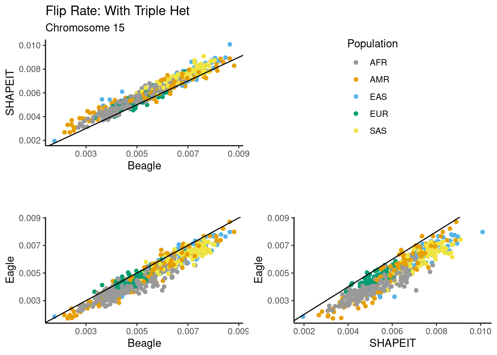
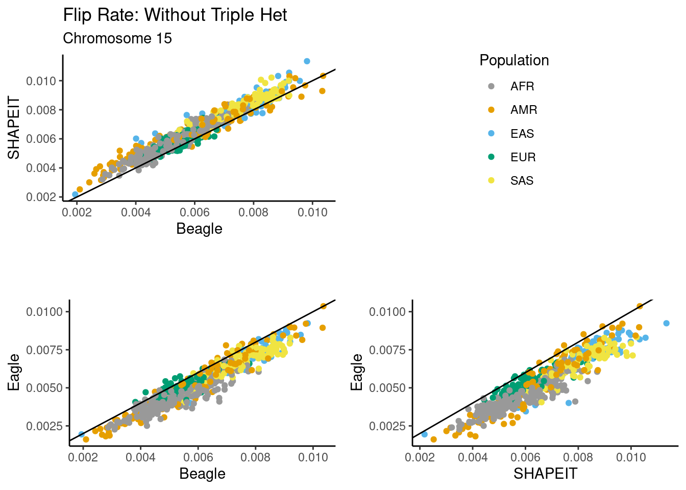
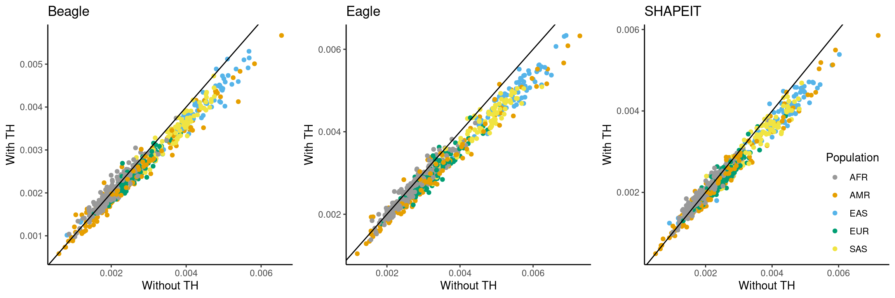
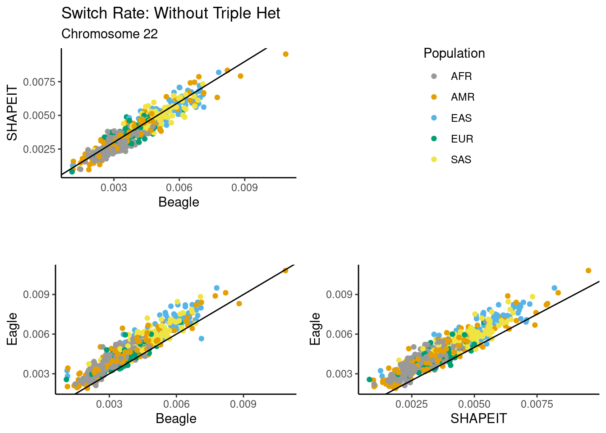

trio_no_th
Andy Beck
2024-06-17
Last updated: 2024-07-02
Checks: 7 0
Knit directory: phasing_clean/
This reproducible R Markdown analysis was created with workflowr (version 1.7.1). The Checks tab describes the reproducibility checks that were applied when the results were created. The Past versions tab lists the development history.
Great! Since the R Markdown file has been committed to the Git repository, you know the exact version of the code that produced these results.
Great job! The global environment was empty. Objects defined in the global environment can affect the analysis in your R Markdown file in unknown ways. For reproduciblity it’s best to always run the code in an empty environment.
The command set.seed(20240501) was run prior to running
the code in the R Markdown file. Setting a seed ensures that any results
that rely on randomness, e.g. subsampling or permutations, are
reproducible.
Great job! Recording the operating system, R version, and package versions is critical for reproducibility.
Nice! There were no cached chunks for this analysis, so you can be confident that you successfully produced the results during this run.
Great job! Using relative paths to the files within your workflowr project makes it easier to run your code on other machines.
Great! You are using Git for version control. Tracking code development and connecting the code version to the results is critical for reproducibility.
The results in this page were generated with repository version 807c28e. See the Past versions tab to see a history of the changes made to the R Markdown and HTML files.
Note that you need to be careful to ensure that all relevant files for
the analysis have been committed to Git prior to generating the results
(you can use wflow_publish or
wflow_git_commit). workflowr only checks the R Markdown
file, but you know if there are other scripts or data files that it
depends on. Below is the status of the Git repository when the results
were generated:
Ignored files:
Ignored: .Rhistory
Ignored: .Rproj.user/
Ignored: .ipynb_checkpoints/
Ignored: chr1_10k.bed
Ignored: chr22_10k.bed
Ignored: data/1kgp/chr1/
Ignored: data/1kgp/chr10_pilot_mask.bed
Ignored: data/1kgp/chr15/
Ignored: data/1kgp/chr15_recomb.bed
Ignored: data/1kgp/chr1_recomb.bed
Ignored: data/1kgp/chr22/
Ignored: data/1kgp/chr22_recomb.bed
Ignored: data/1kgp/chr8/
Ignored: data/1kgp/chr8_recomb.bed
Ignored: data/1kgp/chrX.vcf.gz
Ignored: data/1kgp/chrX.vcf.gz.tbi
Ignored: data/1kgp/chrX_2504_snps_noPAR.bcf
Ignored: data/1kgp/chrX_2504_snps_noPAR_noSing.bcf
Ignored: data/1kgp/chrX_freq.tsv
Ignored: data/1kgp/chrX_maf.tsv
Ignored: data/1kgp/chrX_pilot_mask.bed
Ignored: data/1kgp/chrX_recomb.bed
Ignored: data/1kgp/exclude_samples/
Ignored: data/chr1.1kb.sorted.bed
Ignored: data/chr1.fasta
Ignored: data/chr1.sizes
Ignored: data/chr10.sizes
Ignored: data/chr15.1kb.sorted.bed
Ignored: data/chr15.fasta
Ignored: data/chr15.sizes
Ignored: data/chr15_gc1kb_pilot.bed
Ignored: data/chr15_mask.fasta
Ignored: data/chr15_mask.fasta.fai
Ignored: data/chr1_gc1kb_pilot.bed
Ignored: data/chr1_mask.fasta
Ignored: data/chr1_mask.fasta.fai
Ignored: data/chr22.1kb.sorted.bed
Ignored: data/chr22.fasta
Ignored: data/chr22.sizes
Ignored: data/chr22_gc1kb_pilot.bed
Ignored: data/chr22_mask.fasta
Ignored: data/chr22_mask.fasta.fai
Ignored: data/chr8.1kb.sorted.bed
Ignored: data/chr8.fasta
Ignored: data/chr8.sizes
Ignored: data/chr8_gc1kb_pilot.bed
Ignored: data/chr8_mask.fasta
Ignored: data/chr8_mask.fasta.fai
Ignored: data/chrX.1kb.sorted.bed
Ignored: data/chrX.fasta
Ignored: data/chrX.fasta.fai
Ignored: data/chrX.sizes
Ignored: data/chrX_gc1kb_pilot.bed
Ignored: data/chrX_mask.fasta
Ignored: data/chrX_mask.fasta.fai
Ignored: data/decode/
Ignored: data/hg38.chrom.sizes
Ignored: data/mask_pilot_15_fasta.bed
Ignored: data/mask_pilot_1_fasta.bed
Ignored: data/mask_pilot_22_fasta.bed
Ignored: data/mask_pilot_8_fasta.bed
Ignored: data/mask_pilot_X_fasta.bed
Ignored: data/ref_GRCh38.fna
Ignored: data/ref_GRCh38.fna.fai
Ignored: data/ref_GRCh38.fna.in
Ignored: data/ref_maps/
Ignored: output/switch_errors/
Ignored: output/trio_phase_1/
Ignored: output/trio_phase_15/
Ignored: output/trio_phase_22/
Ignored: output/trio_phase_8/
Ignored: output/vote_1/
Ignored: output/vote_15/
Ignored: output/vote_22/
Ignored: output/vote_x/
Ignored: scratch/
Unstaged changes:
Modified: README.md
Modified: _config.yaml
Modified: code/batch_annotate_het.sh
Modified: code/batch_annotate_switch_vote.sh
Modified: code/batch_annotate_trio_switch.sh
Modified: code/batch_compare_noTH.sh
Modified: code/batch_vote_phase_trio.sh
Modified: code/vote_phase_trio.R
Modified: code/vote_summary.R
Note that any generated files, e.g. HTML, png, CSS, etc., are not included in this status report because it is ok for generated content to have uncommitted changes.
These are the previous versions of the repository in which changes were
made to the R Markdown (analysis/trio_no_th.Rmd) and HTML
(docs/trio_no_th.html) files. If you’ve configured a remote
Git repository (see ?wflow_git_remote), click on the
hyperlinks in the table below to view the files as they were in that
past version.
| File | Version | Author | Date | Message |
|---|---|---|---|---|
| Rmd | 807c28e | Andy Beck | 2024-07-02 | wflow_publish("analysis/trio_no_th.Rmd") |
| html | fe17ab1 | Andy Beck | 2024-06-19 | Build site. |
| html | 34235f1 | Andy Beck | 2024-06-18 | Build site. |
| Rmd | eb6c61a | Andy Beck | 2024-06-18 | wflow_publish("analysis/trio_no_th.Rmd") |
| html | 01938f7 | Andy Beck | 2024-06-17 | Build site. |
| Rmd | 3454129 | Andy Beck | 2024-06-17 | wflow_publish("analysis/trio_no_th.Rmd") |
| html | 4b6c9dd | Andy Beck | 2024-06-17 | Build site. |
| Rmd | 5086d93 | Andy Beck | 2024-06-17 | wflow_publish("analysis/trio_no_th.Rmd") |
| html | 6677345 | Andy Beck | 2024-06-17 | Build site. |
| Rmd | bd83710 | Andy Beck | 2024-06-17 | wflow_publish("analysis/trio_no_th.Rmd") |
| html | 60acca4 | Andy Beck | 2024-06-17 | Build site. |
| Rmd | 7b1f163 | Andy Beck | 2024-06-17 | wflow_publish("analysis/trio_no_th.Rmd") |
| html | ce9e17a | Andy Beck | 2024-06-17 | Build site. |
| Rmd | 6e50512 | Andy Beck | 2024-06-17 | wflow_publish("analysis/trio_no_th.Rmd") |
| html | c1dca8e | Andy Beck | 2024-06-17 | Build site. |
| Rmd | 5b193bc | Andy Beck | 2024-06-17 | wflow_publish("analysis/trio_no_th.Rmd") |
library(tidyverse)
library(pander)
library(reactable)
library(yaml)
library(gtsummary)
library(grid)
library(gridExtra)
config_obj <- yaml::read_yaml("_config.yaml")
cbPalette <- c("#999999", "#E69F00", "#56B4E9", "#009E73", "#F0E442", "#0072B2", "#D55E00", "#CC79A7")
cross_df_plots <- function(df, df_th, metric = "other"){
beagle_var <- paste0("n_", metric, "_beagle")
eagle_var <- paste0("n_", metric, "_eagle")
shapeit_var <- paste0("n_", metric, "_shapeit")
df_tmp <- df_th %>%
rename(Beagle_th = !! sym(beagle_var),
Eagle_th = !! sym(eagle_var),
SHAPEIT_th = !! sym(shapeit_var)) %>%
mutate(Beagle_th = Beagle_th / n_hets,
Eagle_th = Eagle_th / n_hets,
SHAPEIT_th = SHAPEIT_th / n_hets) %>%
select(pair_id, SUPER, Beagle_th, Eagle_th, SHAPEIT_th) %>%
inner_join({
df %>%
rename(Beagle = !! sym(beagle_var),
Eagle = !! sym(eagle_var),
SHAPEIT = !! sym(shapeit_var)) %>%
mutate(Beagle = Beagle / n_hets,
Eagle = Eagle / n_hets,
SHAPEIT = SHAPEIT / n_hets) %>%
select(pair_id, Beagle, Eagle, SHAPEIT)
}, by = "pair_id")
p1 <- df_tmp %>%
ggplot(aes(x = Beagle, y = Beagle_th, colour = SUPER)) +
geom_point() +
geom_abline(slope = 1, intercept = 0) +
theme_classic() +
xlab("Without TH") +
ylab("With TH") +
ggtitle("Beagle") +
labs(color="Population") +
scale_color_manual(values = cbPalette) +
guides(color = "none")
p2 <- df_tmp %>%
ggplot(aes(x = Eagle, y = Eagle_th, colour = SUPER)) +
geom_point() +
geom_abline(slope = 1, intercept = 0) +
theme_classic() +
xlab("Without TH") +
ylab("With TH") +
ggtitle("Eagle") +
labs(color="Population") +
scale_color_manual(values = cbPalette) +
guides(color = "none")
p3 <- df_tmp %>%
ggplot(aes(x = SHAPEIT, y = SHAPEIT_th, colour = SUPER)) +
geom_point() +
geom_abline(slope = 1, intercept = 0) +
theme_classic() +
xlab("Without TH") +
ylab("With TH") +
ggtitle("SHAPEIT") +
labs(color="Population") +
scale_color_manual(values = cbPalette) +
guides(color = guide_legend(position = "inside")) +
theme(legend.position.inside = c(.85, .25))
return(grid.arrange(p1, p2, p3, nrow = 1))
}
cross_meth_plot <- function(df, p_title, p_func, pop, chrom="15") {
p1 <- p_func(df, "Beagle", "SHAPEIT", pop, chrom = chrom)
p_legend <- cowplot::get_legend(p1)
p1 <- p1 + guides(colour="none") + ggtitle(p_title, paste0("Chromosome ", chrom))
p2 <- p_func(df, "Beagle", "Eagle", pop, chrom = chrom) +
guides(colour="none") + ggtitle("", "")
p3 <- p_func(df, "SHAPEIT", "Eagle", pop, chrom = chrom) +
guides(colour="none") + ggtitle("", "")
return(grid.arrange(p1, p_legend, p2, p3, ncol = 2))
}
plot_total_rate <- function(df, m1, m2, pop, chrom="15"){
p <- df %>%
mutate(Beagle = (n_other_beagle + n_flip_beagle) / n_hets,
Eagle = (n_other_eagle + n_flip_eagle) / n_hets,
SHAPEIT = (n_other_shapeit + n_flip_shapeit) / n_hets) %>%
ggplot(aes(x = !! sym(m1), y = !! sym(m2), colour = !! sym(pop))) +
geom_point() +
geom_abline(slope = 1, intercept = 0) +
ggtitle("Error Rate", paste0("Chromosome ", chrom)) +
theme_classic() +
xlab(m1) +
ylab(m2) +
labs(color="Population") +
scale_color_manual(values = cbPalette)
return(p)
}
plot_switch_rate <- function(df, m1, m2, pop, chrom="15"){
p <- df %>%
mutate(Beagle = ( n_other_beagle ) / n_hets,
Eagle = ( n_other_eagle ) / n_hets,
SHAPEIT = ( n_other_shapeit ) / n_hets) %>%
ggplot(aes(x = !! sym(m1), y = !! sym(m2), colour = !! sym(pop))) +
geom_point() +
geom_abline(slope = 1, intercept = 0) +
ggtitle("Error Rate", paste0("Chromosome ", chrom)) +
theme_classic() +
xlab(m1) +
ylab(m2) +
labs(color="Population") +
scale_color_manual(values = cbPalette)
return(p)
}
plot_flip_rate <- function(df, m1, m2, pop, chrom="15"){
p <- df %>%
mutate(Beagle = ( n_flip_beagle ) / n_hets,
Eagle = ( n_flip_eagle ) / n_hets,
SHAPEIT = ( n_flip_shapeit ) / n_hets) %>%
ggplot(aes(x = !! sym(m1), y = !! sym(m2), colour = !! sym(pop))) +
geom_point() +
geom_abline(slope = 1, intercept = 0) +
ggtitle("Error Rate", paste0("Chromosome ", chrom)) +
theme_classic() +
xlab(m1) +
ylab(m2) +
labs(color="Population") +
scale_color_manual(values = cbPalette)
return(p)
}Introduction
The purpose of this document is to compare the rates of phasing errors on probands when triple heterozygotes are removed to what we observed when phasing all sites.
Subject information
df_subj <- read_csv("data/1kgp/subject_info.csv")Rows: 3202 Columns: 6
── Column specification ────────────────────────────────────────────────────────
Delimiter: ","
chr (5): SAMPLE_NAME, POPULATION, SUPER, fatherID, motherID
dbl (1): sex
ℹ Use `spec()` to retrieve the full column specification for this data.
ℹ Specify the column types or set `show_col_types = FALSE` to quiet this message.ped_df <- read_table("data/1kgp/1kGP.3202_samples.pedigree_info.txt")
── Column specification ────────────────────────────────────────────────────────
cols(
sampleID = col_character(),
fatherID = col_character(),
motherID = col_character(),
sex = col_double()
)child_ids <- ped_df %>% filter(fatherID != "0" & motherID != "0") %>% pull(sampleID)
unrel_ids <- scan("data/1kgp/unrelated_subjects.txt", what = character())
df_subj_rel <- df_subj %>%
filter(SAMPLE_NAME %in% child_ids)
df_subj_rel$id2 <- 1:602
df_subj_unrel <- df_subj %>%
filter(SAMPLE_NAME %in% unrel_ids)Chromosome 15
df_switch_th <- read_csv("output/trio_phase_15/switch_errors/summary.csv", show_col_types = FALSE) # with triple hets
df_switch <- read_csv("output/trio_phase_15/no_th/switch_errors/summary.csv", show_col_types = FALSE) # without thFor a sanity check, let’s plot the number of heterozygous positions per proband by data set (there should uniformly be more in the dataset which includes triple heterozygous positions):
df_switch_th %>%
rename(n_het_th = n_hets) %>%
select(pair_id, SUPER, n_het_th) %>%
inner_join({
df_switch %>%
select(pair_id, n_hets)
}, by = "pair_id") %>%
ggplot(aes(x = n_hets, y = n_het_th, colour = SUPER)) +
geom_point() +
theme_classic() +
ggtitle("Heterozygous Positions") +
xlab("Without Triple Hets") +
ylab("With Triple Hets") +
scale_color_manual(values = cbPalette) +
labs(colour = "Population") +
geom_abline(slope = 1, intercept = 0)
As a reminder, here are what the error distribution patterns looked like with the triple heterozygous sites included:
cross_meth_plot(df_switch_th, "Switch Rate: With Triple Het", plot_switch_rate, "SUPER", 15)Warning in get_plot_component(plot, "guide-box"): Multiple components found;
returning the first one. To return all, use `return_all = TRUE`.
For the same cross-method comparison, we observe the following figure:
cross_meth_plot(df_switch, "Switch Rate: Without Triple Het", plot_switch_rate, "SUPER", 15)Warning in get_plot_component(plot, "guide-box"): Multiple components found;
returning the first one. To return all, use `return_all = TRUE`.
Visually, we observe the same general ranking of methods with respect to the switch rate between the two figures. For flips, we observe the following:
cross_meth_plot(df_switch_th, "Flip Rate: With Triple Het", plot_flip_rate, "SUPER", 15)Warning in get_plot_component(plot, "guide-box"): Multiple components found;
returning the first one. To return all, use `return_all = TRUE`.
cross_meth_plot(df_switch, "Flip Rate: Without Triple Het", plot_flip_rate, "SUPER", 15)Warning in get_plot_component(plot, "guide-box"): Multiple components found;
returning the first one. To return all, use `return_all = TRUE`.
Again, we observe the same qualitative ranking of the methods: SHAPEIT generally introduces more flips than the other two methods, while more most probands we observe more flips in Beagle than in Eagle. Now, if we plot the error rates for each method across the data sets, we observe:
cross_df_plots(df_switch, df_switch_th, "other")
cross_df_plots(df_switch, df_switch_th, "flip")
| Version | Author | Date |
|---|---|---|
| 34235f1 | Andy Beck | 2024-06-18 |
Chromosome 22
df_switch_th <- read_csv("output/trio_phase_22/switch_errors/summary.csv", show_col_types = FALSE) # with triple hets
df_switch <- read_csv("output/trio_phase_22/no_th/switch_errors/summary.csv", show_col_types = FALSE) # without thFor a sanity check, let’s plot the number of heterozygous positions per proband by data set (there should uniformly be more in the dataset which includes triple heterozygous positions):
df_switch_th %>%
rename(n_het_th = n_hets) %>%
select(pair_id, SUPER, n_het_th) %>%
inner_join({
df_switch %>%
select(pair_id, n_hets)
}, by = "pair_id") %>%
ggplot(aes(x = n_hets, y = n_het_th, colour = SUPER)) +
geom_point() +
theme_classic() +
ggtitle("Heterozygous Positions") +
xlab("Without Triple Hets") +
ylab("With Triple Hets") +
scale_color_manual(values = cbPalette) +
labs(colour = "Population") +
geom_abline(slope = 1, intercept = 0)
| Version | Author | Date |
|---|---|---|
| 34235f1 | Andy Beck | 2024-06-18 |
As a reminder, here are what the error distribution patterns looked like with the triple heterozygous sites included:
cross_meth_plot(df_switch_th, "Switch Rate: With Triple Het", plot_switch_rate, "SUPER", 22)Warning in get_plot_component(plot, "guide-box"): Multiple components found;
returning the first one. To return all, use `return_all = TRUE`.
| Version | Author | Date |
|---|---|---|
| 34235f1 | Andy Beck | 2024-06-18 |
For the same cross-method comparison, we observe the following figure:
cross_meth_plot(df_switch, "Switch Rate: Without Triple Het", plot_switch_rate, "SUPER", 22)Warning in get_plot_component(plot, "guide-box"): Multiple components found;
returning the first one. To return all, use `return_all = TRUE`.
| Version | Author | Date |
|---|---|---|
| 34235f1 | Andy Beck | 2024-06-18 |
Visually, we observe the same general ranking of methods with respect to the switch rate between the two figures. For flips, we observe the following:
cross_meth_plot(df_switch_th, "Flip Rate: With Triple Het", plot_flip_rate, "SUPER", 22)Warning in get_plot_component(plot, "guide-box"): Multiple components found;
returning the first one. To return all, use `return_all = TRUE`.
| Version | Author | Date |
|---|---|---|
| 34235f1 | Andy Beck | 2024-06-18 |
cross_meth_plot(df_switch, "Flip Rate: Without Triple Het", plot_flip_rate, "SUPER", 22)Warning in get_plot_component(plot, "guide-box"): Multiple components found;
returning the first one. To return all, use `return_all = TRUE`.
| Version | Author | Date |
|---|---|---|
| 34235f1 | Andy Beck | 2024-06-18 |
Again, we observe the same qualitative ranking of the methods: SHAPEIT generally introduces more flips than the other two methods, while more most probands we observe more flips in Beagle than in Eagle. Now, if we plot the error rates for each method across the data sets, we observe:
cross_df_plots(df_switch, df_switch_th, "other")
| Version | Author | Date |
|---|---|---|
| 34235f1 | Andy Beck | 2024-06-18 |
cross_df_plots(df_switch, df_switch_th, "flip")
| Version | Author | Date |
|---|---|---|
| 34235f1 | Andy Beck | 2024-06-18 |
Chromosome 1
df_switch_th <- read_csv("output/trio_phase_1/switch_errors/summary.csv", show_col_types = FALSE) # with triple hets
df_switch <- read_csv("output/trio_phase_1/no_th/switch_errors/summary.csv", show_col_types = FALSE) # without thdf_switch_th %>%
rename(n_het_th = n_hets) %>%
select(pair_id, SUPER, n_het_th) %>%
inner_join({
df_switch %>%
select(pair_id, n_hets)
}, by = "pair_id") %>%
ggplot(aes(x = n_hets, y = n_het_th, colour = SUPER)) +
geom_point() +
theme_classic() +
ggtitle("Heterozygous Positions") +
xlab("Without Triple Hets") +
ylab("With Triple Hets") +
scale_color_manual(values = cbPalette) +
labs(colour = "Population") +
geom_abline(slope = 1, intercept = 0)As a reminder, here are what the error distribution patterns looked like with the triple heterozygous sites included:
cross_meth_plot(df_switch_th, "Switch Rate: With Triple Het", plot_switch_rate, "SUPER", 22)Warning in get_plot_component(plot, "guide-box"): Multiple components found;
returning the first one. To return all, use `return_all = TRUE`.For the same cross-method comparison, we observe the following figure:
cross_meth_plot(df_switch, "Switch Rate: Without Triple Het", plot_switch_rate, "SUPER", 22)Warning in get_plot_component(plot, "guide-box"): Multiple components found;
returning the first one. To return all, use `return_all = TRUE`.Visually, we observe the same general ranking of methods with respect to the switch rate between the two figures. For flips, we observe the following:
cross_meth_plot(df_switch_th, "Flip Rate: With Triple Het", plot_flip_rate, "SUPER", 22)Warning in get_plot_component(plot, "guide-box"): Multiple components found;
returning the first one. To return all, use `return_all = TRUE`.cross_meth_plot(df_switch, "Flip Rate: Without Triple Het", plot_flip_rate, "SUPER", 22)Warning in get_plot_component(plot, "guide-box"): Multiple components found;
returning the first one. To return all, use `return_all = TRUE`.Again, we observe the same qualitative ranking of the methods: SHAPEIT generally introduces more flips than the other two methods, while more most probands we observe more flips in Beagle than in Eagle. Now, if we plot the error rates for each method across the data sets, we observe:
cross_df_plots(df_switch, df_switch_th, "other")cross_df_plots(df_switch, df_switch_th, "flip")
sessionInfo()R version 4.4.1 (2024-06-14)
Platform: x86_64-pc-linux-gnu
Running under: Ubuntu 20.04.6 LTS
Matrix products: default
BLAS: /usr/lib/x86_64-linux-gnu/openblas-pthread/libblas.so.3
LAPACK: /usr/lib/x86_64-linux-gnu/openblas-pthread/liblapack.so.3; LAPACK version 3.9.0
locale:
[1] LC_CTYPE=en_US.UTF-8 LC_NUMERIC=C
[3] LC_TIME=en_US.UTF-8 LC_COLLATE=en_US.UTF-8
[5] LC_MONETARY=en_US.UTF-8 LC_MESSAGES=en_US.UTF-8
[7] LC_PAPER=en_US.UTF-8 LC_NAME=C
[9] LC_ADDRESS=C LC_TELEPHONE=C
[11] LC_MEASUREMENT=en_US.UTF-8 LC_IDENTIFICATION=C
time zone: America/New_York
tzcode source: system (glibc)
attached base packages:
[1] grid stats graphics grDevices utils datasets methods
[8] base
other attached packages:
[1] gridExtra_2.3 gtsummary_1.7.2 yaml_2.3.8 reactable_0.4.4
[5] pander_0.6.5 lubridate_1.9.3 forcats_1.0.0 stringr_1.5.1
[9] dplyr_1.1.4 purrr_1.0.2 readr_2.1.5 tidyr_1.3.1
[13] tibble_3.2.1 ggplot2_3.5.0 tidyverse_2.0.0 workflowr_1.7.1
loaded via a namespace (and not attached):
[1] gtable_0.3.5 xfun_0.42 bslib_0.7.0
[4] htmlwidgets_1.6.4 processx_3.8.3 callr_3.7.5
[7] tzdb_0.4.0 vctrs_0.6.5 tools_4.4.1
[10] ps_1.7.6 generics_0.1.3 parallel_4.4.1
[13] fansi_1.0.6 highr_0.11 pkgconfig_2.0.3
[16] gt_0.10.1 lifecycle_1.0.4 farver_2.1.2
[19] compiler_4.4.1 git2r_0.33.0 munsell_0.5.1
[22] getPass_0.2-4 httpuv_1.6.14 htmltools_0.5.8
[25] sass_0.4.9 crayon_1.5.2 later_1.3.2
[28] pillar_1.9.0 jquerylib_0.1.4 whisker_0.4.1
[31] broom.helpers_1.15.0 cachem_1.1.0 tidyselect_1.2.0
[34] digest_0.6.34 stringi_1.8.3 labeling_0.4.3
[37] cowplot_1.1.3 rprojroot_2.0.4 fastmap_1.2.0
[40] archive_1.1.8 colorspace_2.1-0 cli_3.6.2
[43] magrittr_2.0.3 utf8_1.2.4 withr_3.0.0
[46] scales_1.3.0 promises_1.3.0 bit64_4.0.5
[49] timechange_0.3.0 rmarkdown_2.27 httr_1.4.7
[52] bit_4.0.5 hms_1.1.3 evaluate_0.24.0
[55] knitr_1.45 rlang_1.1.3 Rcpp_1.0.12
[58] glue_1.7.0 xml2_1.3.6 rstudioapi_0.15.0
[61] vroom_1.6.5 jsonlite_1.8.8 R6_2.5.1
[64] fs_1.6.3